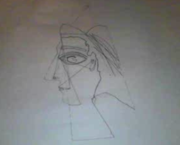

Here's mine:
http://scratch.mit.edu/projects/21216124
Mine didn't really use a ScaraBot I think as you intended, we used a polargraph drawing bot we built mostly from instructions that takes digital image files and tries to sketch them. However, due to the physical nature of the ball chain and planchette there are lots of bumpy lines and because of our current settings for SVG files there are lots of unexpected drag lines so I painted using these "errors." I actually don't see the drag lines or bumpy quality as errors, I think it's great stuff. Thanks to Pablo our Polargraph Drawing Bot
